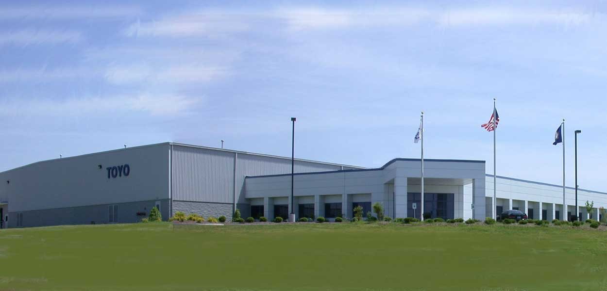
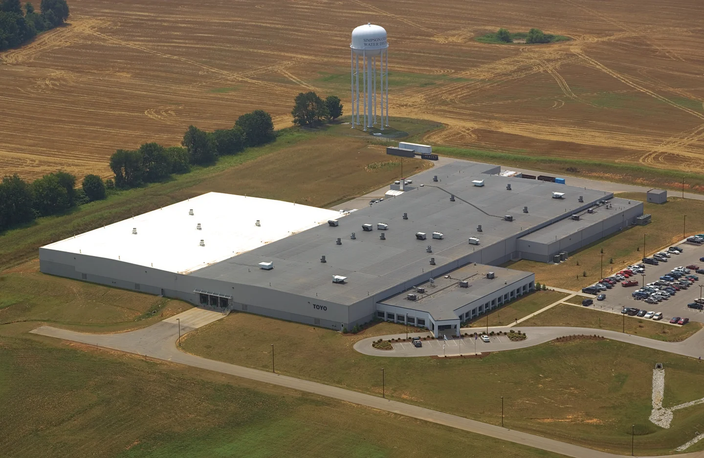
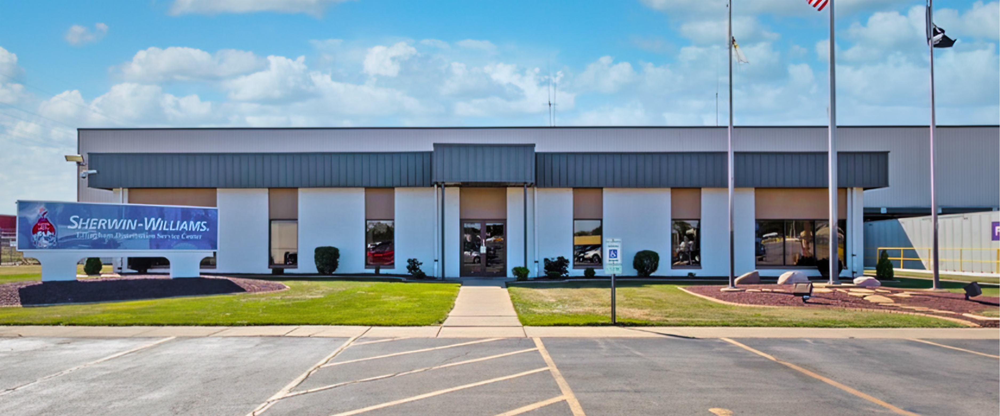
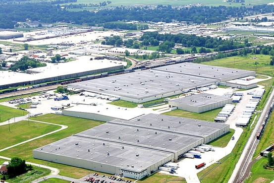
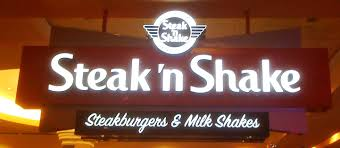
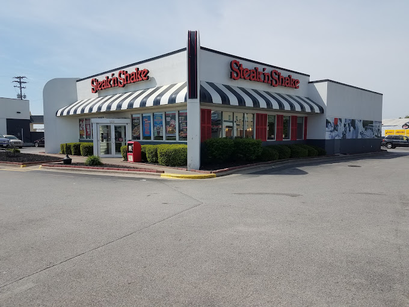

Job History
Toyo Automotive Parts, USA
Receiving Clerk

| Job Responsibilities |
- Ship/receive raw materials both indoors and outdoors - physically and systematically
- Familiarity with trucking regulations and equipment
- Maintain FIFO organization
- Adaptability to unforeseen change
- Effectively communicate issues to appropriate departments
- SAP and WMS operating systems

Sherwin-Williams DSC
Warehouse Technician

| Job Responsibilities |
- Accurately picked paint and paint-related product orders
- Inspected products for defects and damages
- Shipping/Receiving bulk
- AWCS inventory system
- Operated scanners and tablets to facilitate effective warehouse operations
- Troubleshoot any technical or physical issues that happen on the floor
- Maintain 100% productivity rate
- Able to work independently or in support of a cohesive team
- Safety is #1 priority

Steak 'N' Shake
Line Cook

| Job Responsibilities |
- Mastered POS computer system for automated order-taking
- Handled cash and credit transactions quickly and efficiently
- Quick and concise with incoming orders
- Suggestive Selling
- Led production line in absence of Manager
- Frequently trained new hires

Home
Education